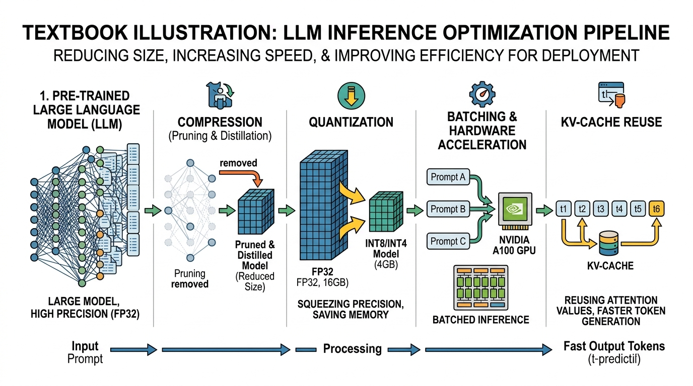

"The fastest code is the code that never runs. The fastest inference is the inference that predicts the answer before it finishes thinking."
Quant AI Agent

Chapter Overview
Training a large language model is only half the challenge (see Chapter 6: Pretraining & Scaling Laws). The other half is making inference fast enough and affordable enough to serve real users. A 70-billion-parameter model consumes over 140 GB of GPU memory at full precision, generates tokens one at a time via autoregressive decoding, and must maintain an ever-growing cache of key/value tensors for each active request. Without optimization, serving LLMs at scale is prohibitively expensive.
This chapter covers the four pillars of inference optimization. First, quantization reduces the precision of model weights (and sometimes activations) so that models fit on fewer GPUs and run faster. Second, KV cache and memory optimization techniques such as PagedAttention, grouped-query attention, and prefix caching eliminate memory waste and boost throughput. Third, speculative decoding breaks the sequential token-generation bottleneck by drafting multiple tokens at once and verifying them in parallel. Finally, serving infrastructure frameworks like vLLM, SGLang, TGI, and TensorRT-LLM tie everything together into production-ready systems that handle thousands of concurrent requests.
By the end of this module, you will understand the math behind each technique, know when to apply each one, and have hands-on experience quantizing models, profiling memory, implementing speculative decoding, and deploying high-throughput inference servers.
Learning Objectives
- Explain the mathematics of absmax, zero-point, and per-group quantization; apply GPTQ, AWQ, and bitsandbytes to compress a 7B model to 4-bit
- Calculate KV cache memory requirements and explain how PagedAttention eliminates fragmentation
- Compare MHA, MQA, and GQA architectures (introduced in Chapter 4) and their effect on memory and throughput
- Describe prefix caching, continuous batching, TTT layers, and DeepSeek Sparse Attention
- Implement speculative decoding with rejection sampling and explain why it preserves the target distribution
- Compare EAGLE and Medusa approaches to self-speculative decoding
- Deploy and benchmark inference servers using vLLM, SGLang, TGI, and TensorRT-LLM (complementing the API-based serving covered in Chapter 9)
- Profile and optimize end-to-end latency (TTFT and TPS) under realistic workloads
Prerequisites
- Chapter 04: Transformer Architecture (attention mechanism, multi-head attention)
- Chapter 05: Decoding Strategies (autoregressive generation, sampling methods)
- Chapter 07: Modern LLM Landscape (Llama, Mistral, DeepSeek architecture details)
- Basic familiarity with GPU memory hierarchy and CUDA concepts
- Python, PyTorch, and Hugging Face Transformers library
Who: Mira, CTO of a 12-person legal-tech startup building an AI contract reviewer.
Situation: The team fine-tuned a 70B parameter model that produced excellent contract analyses, consistently outperforming smaller models on their internal benchmarks.
Problem: Serving the full-precision model required four A100 GPUs at $12/hour, translating to over $8,600 per month before a single customer signed up.
Decision: Mira applied 4-bit AWQ quantization, shrinking the model from 140 GB to roughly 35 GB, fitting it onto a single GPU.
Result: Inference cost dropped by 75%, response latency fell from 4.2 seconds to 1.8 seconds, and benchmark accuracy dropped by only 1.3%. The savings let them launch three months earlier. (For more on cost and ROI analysis, see Chapter 28: LLM Strategy, Product Management & ROI.)
Lesson: Quantization is often the single highest-ROI optimization. Test quality carefully, but do not assume full precision is necessary.
Who: Raj, an ML engineer at an e-commerce company running a customer support chatbot.
Situation: The chatbot handled morning traffic fine, but every afternoon around 2 PM, the service would crash with GPU out-of-memory errors as long conversation histories piled up.
Problem: Each active conversation accumulated KV cache entries. With 200 concurrent users and conversations averaging 3,000 tokens, the naive cache consumed more memory than the model weights themselves.
How: Raj switched the serving backend to vLLM with PagedAttention, which allocates cache memory in small blocks on demand rather than reserving worst-case memory for every request.
Result: Memory utilization dropped from 98% to 62% during peak hours, throughput increased by 2.4x, and the 2 PM crashes vanished entirely.
Lesson: KV cache memory management is not a theoretical concern; it is often the binding constraint on concurrent users in production.
If you have ever wondered why your GPU costs more per month than your apartment rent, congratulations: you are ready for this chapter.
Who: Yuki, a systems architect at a real-time meeting translation platform.
Situation: The platform needed to translate speech segments within 500 milliseconds to keep conversations flowing naturally. Their 13B model produced excellent translations but averaged 780 ms per segment.
Dilemma: Switching to a smaller, faster model (perhaps via distillation) reduced quality noticeably, especially for idiomatic expressions and technical jargon.
Decision: Yuki implemented speculative decoding, using a 1.3B draft model to propose candidate tokens that the 13B model verified in parallel batches.
Result: Average latency dropped to 410 ms (a 47% reduction) with zero quality loss, because rejected draft tokens were resampled from the full model's distribution. The acceptance rate averaged 78%.
Lesson: Speculative decoding is one of the rare free lunches in inference optimization: faster generation with mathematically identical output quality.
Who: Dana, a platform engineer at a healthcare analytics company.
Situation: The company needed to deploy a diagnostic summarization model that would handle 500 requests per minute during hospital shift changes, with strict HIPAA compliance requiring on-premise deployment.
Problem: The team prototyped with a simple FastAPI wrapper around Hugging Face Transformers, but it could only handle 30 requests per minute before queuing delays became unacceptable.
How: Dana benchmarked vLLM, TGI, and TensorRT-LLM on their specific workload. vLLM won on throughput (620 req/min) due to continuous batching and PagedAttention, while TensorRT-LLM offered 15% lower latency per request but required more setup and NVIDIA-specific tooling.
Result: They chose vLLM for its balance of performance, ease of deployment, and active open-source community. Shift-change peaks were handled comfortably with a two-GPU setup.
Lesson: No single serving framework dominates every scenario. Always benchmark on your actual workload, input/output lengths, and concurrency patterns before committing.
Continuous batching is the art of convincing your GPU that it actually enjoys being given more work before it finishes what it already has. Surprisingly, the GPU agrees every time.
Sections
- 8.1 Model Quantization 🟡 ⚙️ 🔧 Quantization math (absmax, zero-point, per-group), data types (INT8, INT4, FP8, NF4), GPTQ, AWQ, bitsandbytes, calibration strategies, quality degradation analysis. Lab: quantize a 7B model and benchmark precision vs. speed tradeoffs.
- 8.2 KV Cache & Memory Optimization 🔴 ⚙️ 🔧 KV cache internals and memory formulas, PagedAttention, MQA/GQA, prefix caching, continuous batching, TTT layers, DeepSeek Sparse Attention. Lab: calculate cache sizes, profile vLLM memory, measure prefix caching throughput.
- 8.3 Speculative Decoding 🔴 ⚙️ 🔧 Draft-verify paradigm, acceptance/rejection sampling, EAGLE (feature-level autoregression), Medusa (multi-head prediction), token tree verification. Lab: implement speculative decoding from scratch and benchmark acceptance rates.
- 8.4 Serving Infrastructure 🟡 ⚙️ 🔧 vLLM, SGLang, TGI, TensorRT-LLM, LMDeploy, Ollama, llama.cpp, Triton Inference Server, benchmarking methodology (throughput, TTFT, TPS). Lab: deploy vLLM and TGI side by side and benchmark under load.
- 8.5 Model Pruning & Sparsity 🔴 ⚙️ Structured and unstructured pruning techniques, magnitude and gradient-based criteria, sparsity patterns, sparse matrix computation, and combining pruning with quantization for maximum inference efficiency.
What's Next?
In the next section, Section 8.1: Model Quantization, we start with model quantization, the technique of reducing numerical precision to shrink model size and accelerate inference.